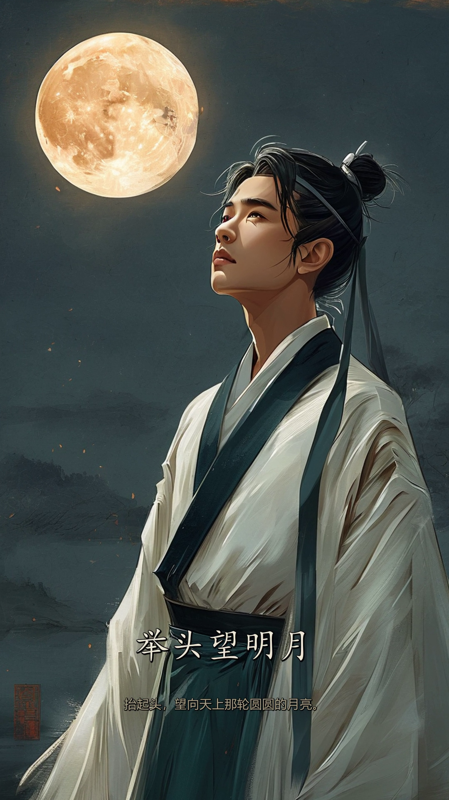

坊诗影工坊 · 工坊手记 · 增补页 04
画面通道新选项：硅基流动 Kolors
从 Seedream 切换到硅基流动的 Kwai-Kolors/Kolors：4 行 .env 配置 + 3 处代码适配；720×1280 原生竖版、无平台水印，全链路实测已通。
日期：2026-10-07
状态：实测通过（文本 + 生图双链路）
配套：《交付报告》《故障复盘》
01 · 怎么配.env 四行
与文本通道共用同一把 Key
.env（项目根目录）
SHIYING_IMAGE_PROVIDER=siliconflow
SHIYING_IMAGE_API_KEY=sk-…（与 SHIYING_TEXT_API_KEY 相同）
# 以下两项有内置预设，可不写 ——
# SHIYING_IMAGE_BASE_URL=https://api.siliconflow.cn/v1
# SHIYING_IMAGE_MODEL=Kwai-Kolors/Kolors
- 内置预设 ——
siliconflow 已内置端点与模型（api.siliconflow.cn/v1 · Kwai-Kolors/Kolors），env 只写 provider + key 即可；需要时可用 BASE_URL / MODEL 覆盖。
- 随时切回 —— 换回 Seedream：
SHIYING_IMAGE_PROVIDER=seedream（免 Key）；两条通道的图片缓存各自独立保留，切回即命中。
- 改完要重启服务 —— .env 只在服务启动时读取（老规矩）。
02 · 适配代码动了哪三处
硅基流动的画像细节和 OpenAI 不同
- 请求参数 —— 硅基流动用
image_size: "720x1280"（9:16 竖版直出）；OpenAI 系用的是 size。
- 响应格式 —— 硅基流动返回
{"images":[{"url":…}]}；OpenAI 是 data[]。现已两种都兼容。
- 文件格式 —— Kolors 输出 PNG（Seedream 为 JPG）：分镜落盘扩展名随通道自动切换。
03 · 实测逐项核验
从单图到成片
- 单图直连 —— 720×1280 竖版一次到位、无平台水印、画质正常。
- 文本链路 —— 工作台实测《鹿柴》：28.3 秒生成逐句释义、背景知识与故事化文案（连人物判定也由大模型完成）。
- 全链路成片 —— 《静夜思》54 秒成片：6 镜出图约 10 秒（并发 2）、总用时约 4 分钟。

《静夜思》Kolors 版成片抽帧（第 3 句「举头望明月」）：字幕核验正常、无明显水印。
| 对比项 | Seedream（本机免 Key） | 硅基流动 Kolors |
|---|
| Key / 成本 | 免 Key（走 AutoClaw 运行时积分） | 硅基流动 API Key（按量计费） |
| 水印 | 右下角「AutoClaw AI生成」（可裁） | 无平台水印 |
| 风格 | 水墨写意、留白多 | 古风写实插画、细节更丰富 |
| 出图速度 | 约 25 秒/张 | 约 3–5 秒/张 |
| 尺寸 | 平台自定（后裁水印区） | image_size 直出 720×1280 竖版 |
04 · 说明边界与建议
几句实话
- 余额为前置条件 —— 硅基流动按量计费；余额不足时接口返回 402 / code 30001（此前已亲历，充值后即刻恢复）。
- 风格取舍 —— 要「水墨留白」选 Seedream；要「快、无水印、尺寸可控」选 Kolors；两条通道随时一行切换。
- 个别画面细节 —— Kolors 偶有自发装饰元素（如仿印章的红色点缀），非平台水印；可在提示词侧继续收敛（后续项）。